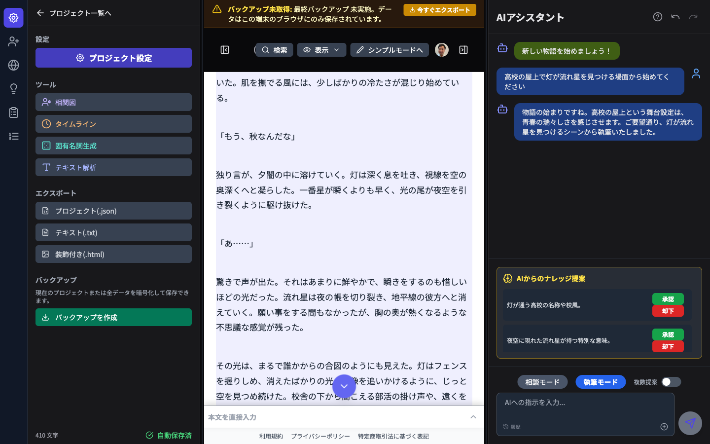
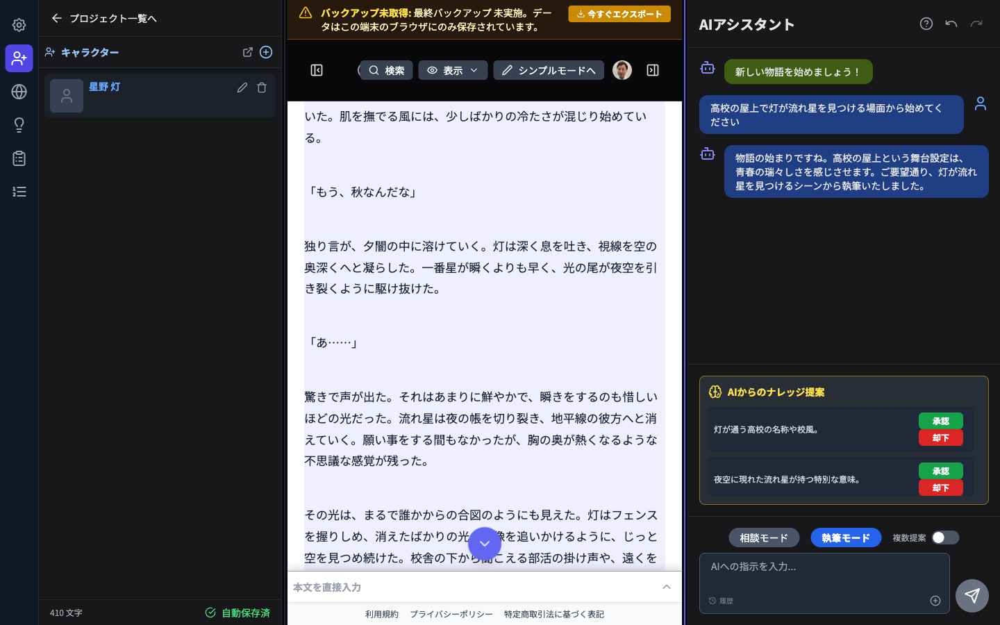
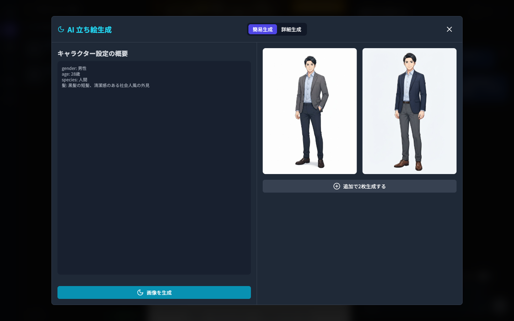
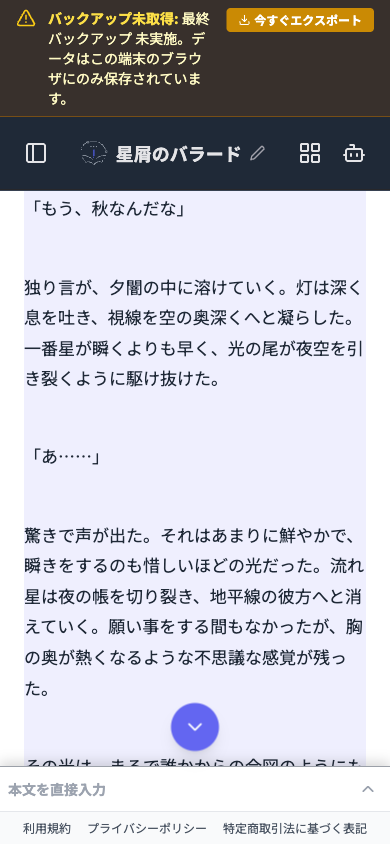

アプリ概要
「小説らいたー」は AI を補助とした小説執筆支援アプリです。執筆者が主役、AI は「後輩・パートナー」的な立ち位置で、 続きの提案・キャラクター作成・世界観構築・立ち絵生成を担当します。プロジェクトデータはブラウザ内（local-first）に保存され、 ログインすると AI 機能が使えるようになります。
コピー用ワンライナー
書くのはあなた、AIは頼れる後輩。― 3パネルエディターで本文とAIの続き提案を並べて執筆できる小説執筆アプリ「小説らいたー」。
主な機能
SNS投稿で見せたい4つの画面です。

3パネルエディター + AI続き生成
中央の原稿用紙に書きながら、右パネルの「アシスタント」に「続きを書く」を頼むと、AIが物語の続きを提案。ナレッジ提案も自動で拾い上げます。

資料の棚（左パネル）
キャラクター・世界観・ナレッジ・プロット・年表をタブで管理。書き込むほどAIがあなたの作品世界に詳しくなります。

AIキャラクター立ち絵生成
キャラクター設定の概要からAIが立ち絵を生成。1回の呼び出しで2枚生成し、必要に応じて追加生成も可能です。
モバイル版
外出先でもスマホから執筆・確認ができます。レスポンシブ対応で原稿執筆画面もそのまま使えます。

投稿文言ドラフト
そのまま使うか、トーンに合わせて調整してください。
ドラフト 1 — アプリ紹介
小説らいたー、はじめました。 書くのはあなた、AIは頼れる後輩。 3パネルエディターで本文とAIの続き提案を並べて執筆できます。
ドラフト 2 — 資料の棚
キャラクターも世界観もナレッジも、ぜんぶ「資料の棚」で一元管理。 書けば書くほどAIがあなたの作品に詳しくなっていきます。
ドラフト 3 — モバイル対応
スマホからでも執筆できます。 思いついた瞬間に書き留められる、AI伴走型の小説エディター。
投稿前チェック: 現時点は無料範囲での公開です。料金・課金プランに関する言及は避けてください。テスト用プロジェクト（「星屑のバラード」等）はスクリーンショット用ダミーデータで、実在の作品ではありません。